Erdogan face à son destin. Ingérence en Syrie, tensions avec la Russie et agenda de l’OTAN. Rétrospective : Guerre contre la Syrie, double jeu et renversement d’alliances
par Youssef HINDI
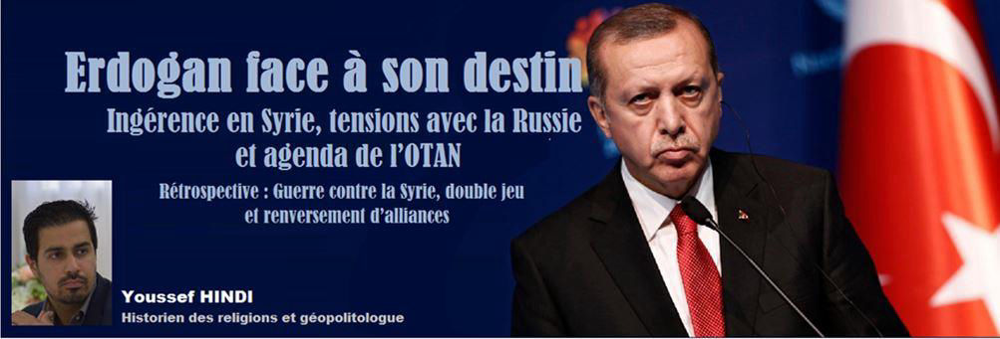
Depuis le début de la guerre contre la Syrie en 2011, Recep Tayyip Erdogan, en tant que Premier ministre (2003-2014) et Président de la République de Turquie (depuis 2014) a engagé son pays, aux côtés, entre autres, des États-Unis, de l’Arabie saoudite et d’Israël, dans une guerre, par l’intermédiaire de groupes terroristes qu’il soutient, abrite et arme.
En tant que membre de l’OTAN, la Turquie a offert son plein soutien à la coalition occidentale, sous l’autorité des États-Unis, dans la tentative de démembrement du Levant, conformément à l’application du plan israélien Oded Yinon1. La déstabilisation de la Syrie est, du point de vue de l’expansionniste Erdogan, une opportunité de se tailler une part du territoire du pays du Cham.
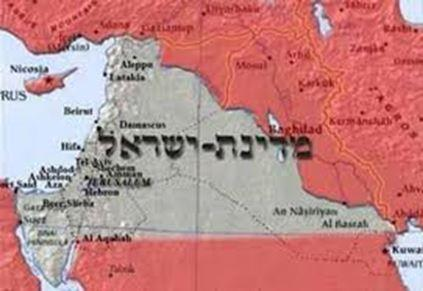N’oublions pas que la Turquie d’Erdogan (alors premier ministre), membre de l’OTAN, faisait partie de la coalition dans la guerre menée contre la Libye2.
Déjà en octobre 2012, prétextant des frappes de l’armée syrienne sur le sol turc, Erdogan tenta d’entrainer son pays dans une guerre directe avec la Syrie. Une manifestation de la population turque éclata alors pour s’opposer à une guerre contre la Syrie ; cette manifestation se transforma en rassemblement contre le parti au pouvoir, l’AKP3.
Le 24 novembre 2015, un avion de chasse turc avait abattu un bombardier Su-24 russe dans l’espace aérien syrien. Le président turc, Recep Tayyip Erdogan, alors isolé et pris entre le marteau américain et l’enclume russe, a fini par présenter ses excuses au Kremlin en juin 20164.
Excuses acceptées par les Russes qui ont vu là l’opportunité de rediriger la politique d’un Erdogan affaibli.
Mais j’annonçais dans un article du 2 juillet 20165 que la réconciliation entre la Turquie d’Erdogan et la Russie ne serait que temporaire compte tenue de l’analyse de la politique turque, notamment sur le dossier syrien.
Dans ce même article (du 2 juillet 2016), j’émettais l’hypothèse de la destitution du président Erdogan. Deux semaines plus tard, dans la nuit du 15 au 16 juillet 2016, une tentative de coup d’Etat fomentée par une faction des Forces armées turques manqua de destituer Erdogan.
Le Kremlin a alors soutenu Erdogan, et lui a peut-être permis de se maintenir au pouvoir.
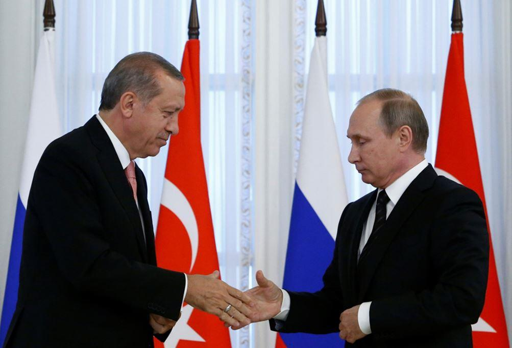Suite à cette tentative de putsch à laquelle il a réchappé, le président turc a, durant l’été 2016, envoyé des mots d’amitié au président syrien6.
Mais après la grande purge qui lui a permis de raffermir son pouvoir7, Erdogan est revenu à sa position d’hostilité vis-à-vis de la Syrie et de Bachar al-Assad. En novembre de la même année, alors que l’armée turque manœuvrait sur le territoire syrien, Erdogan déclarait (le 29 novembre 2016) :
« Nous sommes entrés en Syrie pour en finir avec le règne du tyran Assad. 8»
La bataille d’Idlib : l’armée turque et les terroristes versus la Syrie et la Russie
À la bataille d’Idlib, Russes et Turcs soutiennent deux camps opposés. L’armée russe appuie l’armée syrienne, et les Turcs, depuis le début du conflit, apportent leur aide aux groupes terroristes.
La Turquie et la Russie ont alors convenu, pour éviter des confrontations directes, de coopérer afin de faire cesser les hostilités à Idlib en créant une zone démilitarisée en vertu d’accords de 2017 et 2018 appelés respectivement accords d’Astana et de Sotchi9.
Après la reprise d’une ville stratégique du nord-ouest syrien par l’armée régulière syrienne, Recep Tayyip Erdogan a accusé la Russie de ne pas respecter les deux accords conclus avec Ankara sur le gouvernorat d’Idlib.
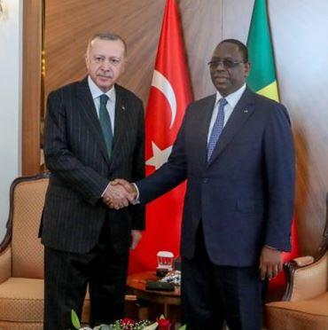Le président turc a déclaré le 29 janvier 2020, lors de son vol de retour du Sénégal, où il s’était rendu en visite officielle :
« Il ne reste plus rien du processus d’Astana. Il faut voir ce que la Turquie, la Russie et l’Iran sont en mesure de faire pour le ranimer.10»
Ces déclarations sont intervenues suite à la reprise par l’armée syrienne de la ville stratégique de Maarat Al-Nouman11, sur la route d’Alep à Hama, après des semaines de combats.
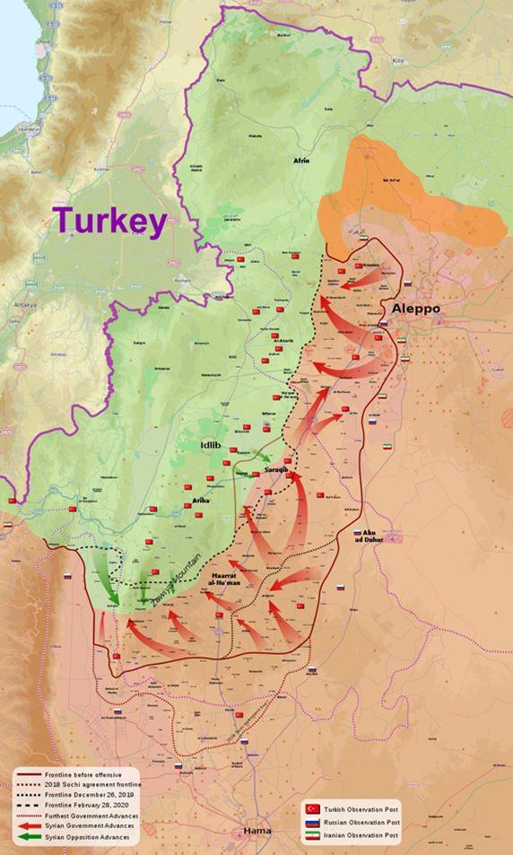Lundi 27 janvier 2020, les militaires syriens ont bloqué de trois côtés un poste d’observation des militaires turcs à Maar Hattat, au sud de Maarat Al-Nouman. Le ministère turc de la Défense a réagi au blocage en menaçant de riposter face aux forces syriennes si la sécurité des postes d’observation turcs était remise en question12.
La chaine de télévision turque NTV a rapporté les propos d’Erdogan qui a mis en accusation la Russie pour non-respect des deux accords :
« Si la Russie continue à respecter les accords de Sotchi et d’Astana, nous ferons de même. À l’heure actuelle, la Russie ne les respecte pas… Moscou devrait définir sa position. Soit elle mène le processus avec la Syrie dans un autre format, soit elle mènera autrement le processus avec la Turquie. »
Mais rappelons que les terroristes logés à Idlib, soutenus par la Turquie, attaquent régulièrement les positions de l’armée syrienne, notamment à Maan et Atshan. Rappelons également qu’en janvier 2019, le ministre russe des Affaires étrangères, Sergueï Lavrov, expliquait déjà que la trêve convenue entre la Russie et les terroristes, auxiliaires d’Ankara, avait pris fin en raison de la domination d’Idlib par les éléments terroristes de Hayat Tahrir al-Cham. « Le fait que le Front al-Nosra ait pris le contrôle d’une grande partie du gouvernorat d’Idlib, ne correspond pas bien sûr aux accords conclus sur les questions de sécurité d’Idlib », a souligné M. Lavrov le 29 janvier 2019.
Al-Nosra et les autres groupes terroristes proches de la Turquie n’avaient pas respecté l’accord russo-turc qui stipule leur désarmement et leur retrait de la zone tampon déterminée d’un commun accord. Ce qui contraignait hier comme aujourd’hui l’armée syrienne et ses alliés à passer à l’offensive13.
La Turquie avait envoyé le 19 août 2019 des troupes (environ 50 véhicules militaires, dont des blindés, des transporteurs de troupes et au moins cinq chars) en renfort aux terroristes dans la région d’Idlib14.
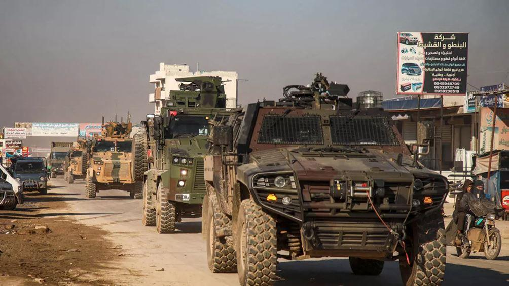Le 19 septembre 2019, la Belgique, l’Allemagne et le Koweït ont présenté un projet de résolution au Conseil de sécurité des Nations Unies visant à protéger les terroristes d’Idlib. Une résolution appelant à un cessez-le-feu universel incluant également les terroristes, contre lesquels l’armée syrienne et ses alliés seraient contraints de cesser les opérations, qui a reçu 12 votes en sa faveur (États-Unis, Royaume-Uni, France, Allemagne, Belgique, République dominicaine, Koweït, Pérou, Pologne, Côte-d’Ivoire, Indonésie, Afrique du Sud), deux vétos (Russie, Chine) et une abstention (Guinée Equatoriale).
Le ministère russe des Affaires étrangères a annoncé le jeudi 6 février 2020 la mort de spécialistes militaires russes et turcs par des terroristes qui ont organisé plus de 1 000 attaques au cours des deux dernières semaines de janvier dans la zone de désescalade d’Idlib, a annoncé la diplomatie russe, et de préciser :
« À la mi-janvier, des militaires russes et turcs ont entrepris une nouvelle tentative de mettre en place un cessez-le-feu dans la zone de désescalade d’Idlib. Non seulement les terroristes n’ont pas réduit leurs hostilités, mais ils ont au contraire intensifié leurs attaques. 15»
Le Kremlin, de son côté, a indiqué que des formations terroristes poursuivaient leurs activités dans une « zone de responsabilité turque ».
En réponse aux tirs contre des zones résidentielles qui se poursuivaient en dépit d’un cessez-le-feu, les forces de Damas ont lancé fin janvier 2020 une vaste offensive à l’ouest d’Alep.
Erdogan menace
Recep Tayyip Erdogan avait sommé Damas de retirer ses troupes de la région du nord-ouest de la Syrie – le président turc ordonne donc à l’armée syrienne de se retirer d’une région syrienne où l’armée turque se trouve illégalement – d’ici la fin du mois de février sous peine d’une intervention militaire.
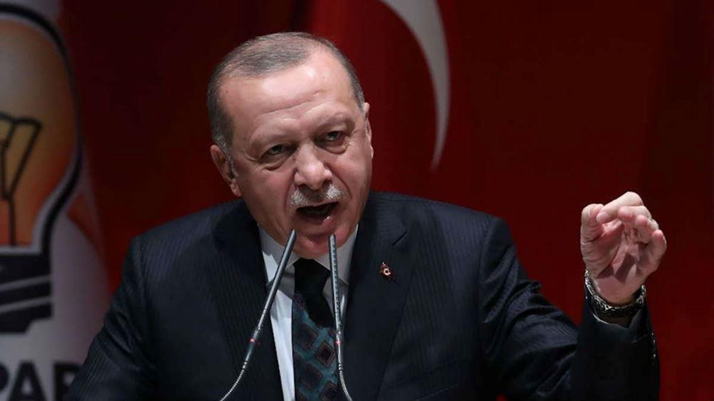Lors d’un discours prononcé le 5 février 2020 devant le groupe parlementaire de l’AKP, le président turc a déclaré :
« Toute attaque, qu’elle soit terrestre ou aérienne, contre nos troupes ou contre les éléments amis avec lesquels nous travaillons recevra une réponse sans aucun avertissement quelle que soit son origine. Personne ne peut s’opposer à ce que nous exercions nous-mêmes notre droit de le faire étant donné l’incapacité à garantir la sécurité de nos troupes à Idlib. »
L’intervention de l’armée syrienne à Idlib aurait causé la mort de quatre soldats turcs et blessé neuf autres, a annoncé le 3 février 2020 le ministère turc de la Défense ; et la Turquie a immédiatement mené une riposte dans une zone présumée de déploiement des unités d’artillerie syriennes et a « détruit plusieurs cibles », selon le communiqué turc. Les militaires turcs sont en contact avec leurs collègues russes suite à ces faits, déclara le président Erdogan. La Turquie dispose de 12 postes d’observation dans la région dans le cadre d’un accord Turquie-Russie conclu en mai 2017 afin d’empêcher l’escalade16.
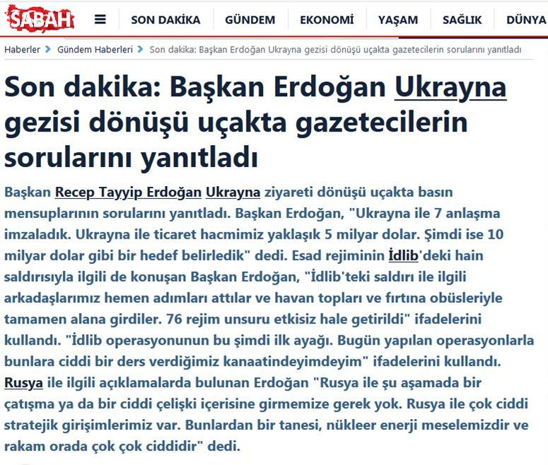Au retour d’une visite officielle en Ukraine, Erdogan a tenu une conférence de presse dans l’avion qui le ramenait en Turquie. Il revint une nouvelle fois sur l’attaque menée par les forces syriennes dans le gouvernorat d’Idlib qui aurait fait quatre morts du côté turc. Il affirma notamment que les relations avec la Russie ne s’en retrouveraient pas détériorées. Ses propos ont été rapportés mardi 4 février par le journal turc Sabah17.
« Nous n’avons pas besoin d’entrer en conflit avec la Russie à ce stade-ci. Nous avons des projets stratégiques avec elle, comme le gazoduc Turkish Stream et la centrale nucléaire d’Akkuyu », a-t-il déclaré devant les journalistes turcs, ajoutant qu’il n’allait pas non plus abandonner les systèmes russes de défense aérienne S-400.
Comme je l’écrivais dans un article du 4 décembre 201618, Erdogan s’imagine que la Russie le laissera réaliser ses rêves de conquête au détriment de la Syrie en échange d’un accord gazier ; or, j’ajoutais que les Russes n’étaient pas disposés à le laisser faire. Et nous en avons la confirmation aujourd’hui, alors que je rédige ces lignes.
Le président turc avait annoncé la veille (le 3 février 2020) que les chasseurs F-16 turcs avaient tué une trentaine de militaires syriens, affirmant que cinq militaires et trois civils turcs étaient tombés à cause des tirs d’artillerie du « régime de Bachar el-Assad ». Or, le ministère russe de la Défense a nié ces informations d’Ankara. L’armée turque n’a pas bombardé les positions de l’armée syrienne à Idlib, a annoncé un communiqué du Centre russe pour la réconciliation des parties en conflit en Syrie qui fait partie du ministère russe de la Défense :
« Les avions des forces aériennes de la Turquie n’ont pas violé la frontière syrienne, les frappes contre les positions des forces syriennes n’ont pas été signalées. »
La Défense russe a ajouté que l’espace aérien au-dessus de la zone de désescalade d’Idlib est surveillé en permanence par les Forces aérospatiales russes19.
Erdogan avait également critiqué Moscou pour sa position à l’égard des actions menées par Damas. Le président turc a indiqué (le mercredi 5 février 2020) qu’il a demandé au président Poutine de « museler les forces du régime syrien », avertissant qu’Ankara riposterait à toute éventuelle attaque venant de l’armée syrienne20.
Lundi 3 février 2020, le ministre russe des Affaires étrangères, Sergueï Lavrov, a appelé son homologue turc afin de rappeler une nouvelle fois que les accords conclus devaient être respectés21.
La Turquie envoya de nouveaux renforts militaires vers ses points d’observation dans la province d’Idlib où l’armée syrienne progresse en dépit des mises en garde répétées d’Ankara, ont rapporté les médias vendredi 7 février.
Un convoi de 150 véhicules militaires transportant des équipements et des troupes a franchi la frontière turco-syrienne en direction d’Idlib où Ankara achemine des renforts depuis plusieurs jours, a indiqué l’agence étatique turque Anadolu. L’envoi de ces renforts survient alors que l’armée syrienne semblait en passe de prendre la ville de Saraqeb, dans l’est de la province d’Idlib.
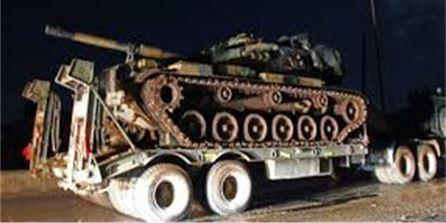
Parallèlement à la Turquie, Israël continue ses frappes en Syrie et s’oppose à la Russie
Le 6 février 2020, l’armée de l’air israélienne a bombardé une banlieue de Damas sans pénétrer dans l’espace aérien syrien. Des avions de chasse israéliens ont tiré huit missiles air-sol, provoquant une riposte anti-aérienne syrienne, selon un communiqué du ministère russe de la Défense22. Le lendemain l’armée russe a accusé Israël de s’être servi d’un Airbus-320 avec 172 passagers à bord comme bouclier pour échapper à une riposte syrienne à des bombardements la veille près de l’aéroport de Damas.
« Au moment de l’attaque des avions israéliens […] un avion de ligne Airbus-320 était en approche, en vue de son atterrissage » rapporte la source ministérielle, et il s’est retrouvé dans « la zone mortelle de tirs aériens et d’artillerie ». C’est grâce à l’« action rapide des aiguilleurs de ciel de l’aéroport de Damas » que l’A320 a pu « sortir de cette zone qui se trouvait dans le viseur des systèmes syriens de défense antiaérienne », assure cette même source.
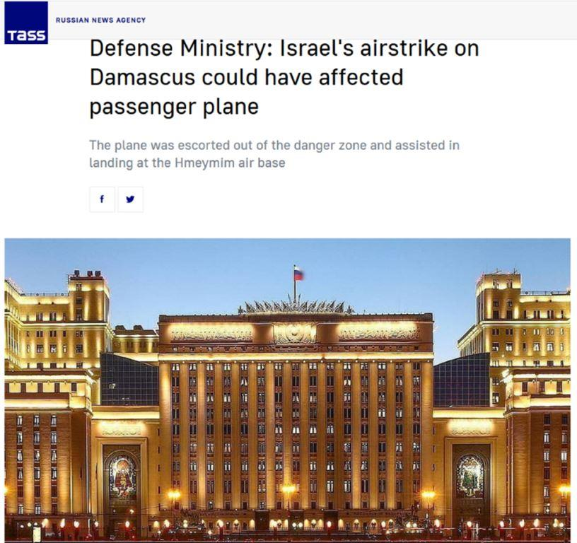Lors d’une déclaration rapportée par l’agence russe Tass23, le porte-parole du ministère russe de la Défense, Igor Konachenkov, a expliqué que l’avion, qui reliait Téhéran à Damas avec 172 civils à bord, « a pu atterrir en sécurité sur la base russe de Hmeimim, escorté hors de la zone de danger et aidé à atterrir. »
La Syrie a affirmé que son système de défense aérienne avait abattu des missiles israéliens qui auraient visé, d’après les médias israéliens, des cibles iraniennes.
L’armée israélienne a précédemment admis avoir mené des attaques contre la Syrie au cours des dernières années, ciblant des convois d’armes destinés aux forces du Hezbollah dans le pays ainsi que des infrastructures militaires iraniennes, mais n’a pas commenté cet incident24.
« Le recours à des avions civils lors d’opérations militaires aériennes pour se couvrir ou bloquer les ripostes des forces syriennes est devenu une caractéristique pour l’armée de l’air israélienne », a affirmé le ministère russe de la Défense.
Les radars israéliens ont une « vision claire de la situation dans le ciel autour de l’aéroport de Damas », souligne l’armée russe, accusant Israël de se « moquer totalement des vies de centaines de civils innocents ».
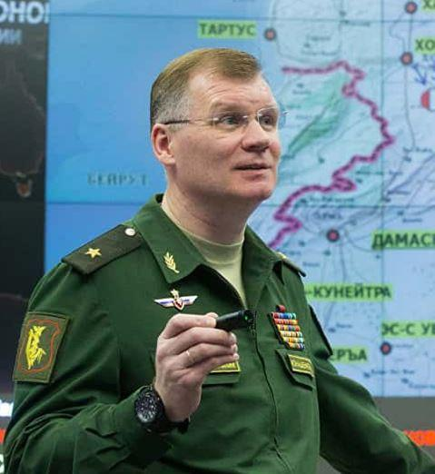Cette méthode avait déjà été employée le 17 septembre 2018 par les Israéliens, entrainant la destruction d’un avion russe Il-20 et la mort des 15 membres de l’équipage. L’appareil se dirigeait vers la base aérienne de Hmeimim, à 35km des côtes syriennes, avait annoncé le ministère russe de la Défense, et d’ajouter que l’avion a été abattu par des systèmes syriens S-200 en raison des actions « irresponsables » et « provocatrices » d’Israël. Menant des frappes en Syrie, des pilotes israéliens se sont abrités derrière l’avion russe Il-20 qui s’est retrouvé exposé au feu des systèmes de défense aérienne syrien S-200, avait déclaré le porte-parole du ministère russe de la Défense, Igor Konachenkov25.
Sans aller jusqu’à affirmer qu’il y a une coordination entre les armées turque et israélienne, l’on peut au moins constater que l’État hébreu et la Turquie d’Erdogan ont les mêmes ennemis et les mêmes cibles : comme le fait Israël, l’armée turque attaque le Hezbollah. Le vendredi 28 février 2020 l’armée turque a visé le quartier général du Hezbollah à Idlib tuant 9 combattants fidèles à Hassan Nasrallah26.
Rappelons au passage que la Turquie a acheté du pétrole à Daech pour le revendre à des pays occidentaux – le plus important acheteur de ce pétrole est Israël, à qui Erdogan livrait 75 % de ce pétrole vendu par le groupe terroriste27.
D’ailleurs, la Russie accusait Erdogan et sa famille d’être directement et personnellement impliqués dans ce trafic de pétrole avec Daech28.
Idlib, le cimetière politique d’Erdogan ?
La Turquie a déclaré le 20 février 2020, via son ministère de la Défense, que plus de 50 « cibles syriennes » auraient été neutralisées à Idlib. Le président turc annonçant qu’une nouvelle opération militaire dans le gouvernorat pourrait « commencer à tout moment », a également qualifié la situation actuelle à Idlib de « guerre ». Et Recep Tayyip Erdogan a ajouté :
« Ce qu’il se passe à Idlib peut être décrit par le mot ‘‘guerre’’. Nous y avons lancé une opération29. »
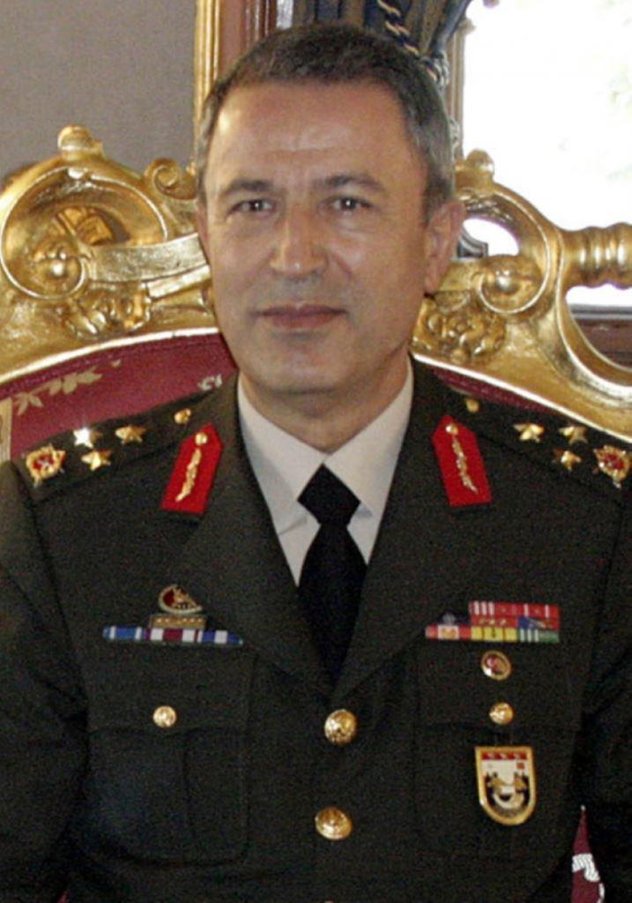D’ailleurs, selon Ankara la Turquie pourrait recevoir des Etats-Unis des systèmes de missiles Patriot ; alors que certains s’imaginaient qu’Erdogan songeait à quitter l’OTAN depuis la tentative de coup d’État de juillet 2016. Le ministre turc de la Défense, Hulusi Akar, a déclaré le 20 février 2020 que, compte tenu de la situation à Idlib, en Syrie, les États-Unis pourraient livrer à Ankara des systèmes de missiles Patriot :
« Les États-Unis déclarent qu’ils nous soutiennent à Idlib. Il est évident qu’il ne s’agit pas de l’implantation de bases militaires américaines dans le secteur. Il pourrait être question de soutien sous forme de systèmes Patriot, notamment de pays d’Europe. On apprécierait de telles propositions. 30»
Il ne faut aujourd’hui plus aucun doute que la Turquie, aux côtés des États-Unis, travaillent depuis 2011 à la destruction de la Syrie et à la destitution de son président légitime.
Et le ministre turc de la Défense ne cache pas les intentions du gouvernement d’Erdogan. Dans une interview donnée à la chaîne CNN Türk, il a également précisé les conditions du retrait de la Turquie de Syrie :
« Quand il y aura une Constitution, quand des élections légitimes se seront tenues et quand il y aura des dirigeants légitimes au pouvoir dans le pays, un État démocratique. Chacun occupera sa place et nous occuperons la nôtre.31 »
Erdogan avait quant à lui promis de ne pas laisser Idlib au « régime d’Assad » et à ses partisans.
Moscou a immédiatement réagi à l’annonce d’un éventuel lancement d’une opération militaire turque à Idlib, considérant cette option comme le « pire scénario ». Ce à quoi Erdogan a répondu : « Je ne crois pas que la Russie participera à des scénarios aussi mauvais. 32»
En clair, du point de vue d’Erdogan la Russie ne s’opposerait pas à l’armée turque sur le terrain.
Mais le 20 février, des avions russes ont détruit un char et 6 véhicules blindés terroristes qui étaient passés à l’offensive contre l’armée syrienne dans la zone d’Idlib. Une annonce faite par le Centre russe pour la réconciliation en Syrie :
« Sur la demande du commandement syrien, des avions Su-24 des Forces aérospatiales russes ont frappé les groupes terroristes qui étaient passés à l’offensive, ce qui a permis aux forces syriennes de repousser les attaques. Un char, six véhicules blindés et cinq pickups portant des armes de gros calibres ont été détruits. 33»
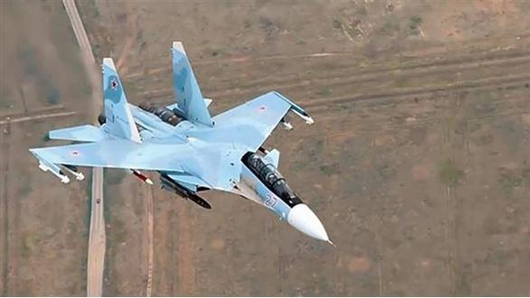L’offensive des terroristes a été soutenue par l’artillerie turque. Après que les spécialistes russes eurent détecté les tirs turcs visant l’armée syrienne et en informèrent la partie turque, les tirs cessèrent, affirma le Centre qui fit état de quatre blessés dans les rangs de l’armée syrienne. Et la partie russe de préciser :
« Il s’agit d’un énième cas de soutien de combattants radicaux par les forces turques. Pour éviter tout incident, nous appelons la partie turque à cesser de soutenir les terroristes et de leur fournir des armes. »
Le ministère turc de la Défense a, pour sa part, annoncé que deux de ses militaires avaient été tués et cinq autres blessés dans « une frappe aérienne » à Idlib34.
Le président de la Fédération de Russie, Vladimir Poutine a eu un entretien téléphonique avec Recep Tayyip Erdogan le 21 février.
Vladimir Poutine a exprimé sa vive inquiétude face aux développements dans le gouvernorat d’Idlib. Le service de presse du Kremlin a indiqué que :
« L’entretien a de nouveau été focalisé sur la situation dans la zone de désescalade d’Idlib. Vladimir Poutine s’est dit préoccupé par les actions agressives auxquelles se livrent les groupes extrémistes. L’accent a été mis sur la nécessité d’un respect inconditionnel de la souveraineté et de l’intégrité territoriale de la Syrie.35 »
Entretemps, Recep Tayyip Erdogan a promis que la Turquie agirait dans la région en fonction des prochaines négociations avec Vladimir Poutine.
Angela Merkel et Emmanuel Macron ont eu eux aussi une conversation téléphonique avec Vladimir Poutine le 20 février au sujet de la situation dans le gouvernorat d’Idlib et se sont dits prêts à assister à une entrevue avec Recep Tayyip Erdogan. Ils ont proposé d’organiser une rencontre quadripartite à Istanbul le 5 mars.
« Lors de l’entretien téléphonique avec Poutine, Merkel et Macron ont appelé à établir un strict cessez-le-feu à Idlib », a déclaré M. Erdogan. « Je négocierai avec Poutine. J’espère que nous pourrons réaliser une avancée. L’issue des pourparlers d’aujourd’hui va déterminer nos actions [à venir]. »
Escalade et risque de conflit
Le 27 février 2020, une frappe aérienne de l’armée syrienne a atteint un convoi militaire turc qui venait soutenir les terroristes à Idlib.
Un communiqué du ministère russe de la Défense au lendemain de la frappe a fait état de 33 morts parmi les militaires turcs :
« Des militaires turcs, se trouvant au sein d’unités combattantes de groupes terroristes, ont été pris sous le feu des soldats syriens », dans la province d’Idlib.36
Le ministère russe de la Défense a précisé que la Turquie n’avait pas communiqué la présence de ses troupes dans la zone concernée et qu’elles « n’auraient pas dû s’y trouver ». « Les forces aériennes de la Russie n’ont pas été utilisées dans cette zone », poursuit le communiqué ministériel.
En vertu d’un accord russo-turc, les forces turques présentes dans la province d’Idlib sont censées communiquer leurs positions à la Russie ; ce qui n’a pas été fait jeudi 27 février, conduisant à la mort d’au moins 33 soldats turcs (et 32 blessés).
Le ministère a aussi affirmé qu’aussitôt que la Russie a été informée de la présence des militaires d’Ankara dans la zone, elle a pris « toutes les mesures pour un cessez-le-feu total de la partie syrienne, assurant l’évacuation des morts et des blessés en toute sécurité vers le territoire de la Turquie ».
Jeudi 27 février au soir, le ministère russe de la Défense a accusé la Turquie de violer un accord sur la Syrie en soutenant des rebelles avec des tirs d’artillerie et des drones dans la zone d’Idlib. Les deux pays avaient conclu en 2018 à Sotchi (Russie) un accord prévoyant la fin des combats et l’établissement de postes d’observation turcs dans la région d’Idlib ; et la Turquie a systématiquement violé cet accord.
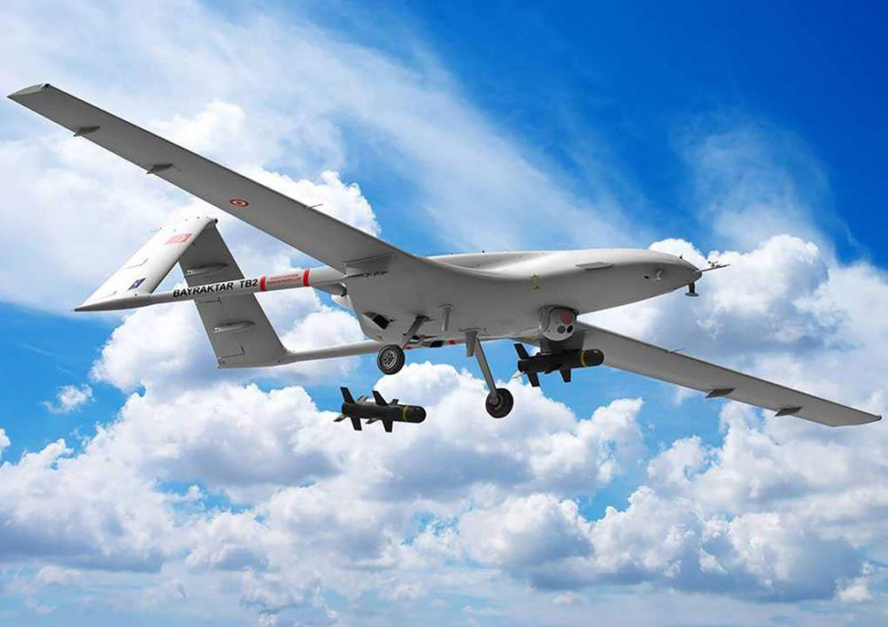La télévision d’Etat russe, Rossiya 24, rapportait le jeudi 27 février (le jour de la frappe syrienne contre les troupes turques) que les spécialistes militaires turcs dans la région d’Idlib utilisaient des missiles d’épaule pour tenter d’abattre des avions de combat russes et syriens.37
Cette information, a été diffusée lors d’un reportage à Idlib sur la chaîne Rossiya 24, alors que des responsables turcs et les rebelles ont déclaré que les « rebelles syriens », soutenus par l’armée turque, s’étaient emparés de la ville de Nairab à Idlib.
Rossiya 24 rapportait que : « Les avions syriens et russes arrêtent les rebelles encore et encore. Mais le ciel au-dessus d’Idlib est également dangereux. Les rebelles et les spécialistes turcs utilisent activement des systèmes de défense aérienne portables. »
Le New York Times a publié le 27 février 2020 un article sur une éventuelle confrontation entre la Russie et la Turquie :
« Les responsables turcs ont déclaré que la frappe avait été menée par les forces gouvernementales syriennes, mais ce sont des avions russes qui ont mené la plupart des frappes aériennes dans la région ces dernières semaines. Les manifestants turcs à Istanbul ont convergé vers le consulat russe à Istanbul vendredi matin, en scandant « Meurtrier la Russie ! Meurtrier Poutine ! »
Les responsables turcs ont évité de blâmer le gouvernement russe pour l’agression contre leurs forces en Syrie, espérant ainsi éviter une confrontation directe avec l’armée russe beaucoup plus forte et garder une ligne ouverte pour des discussions avec le président russe, Vladimir Poutine.38 »
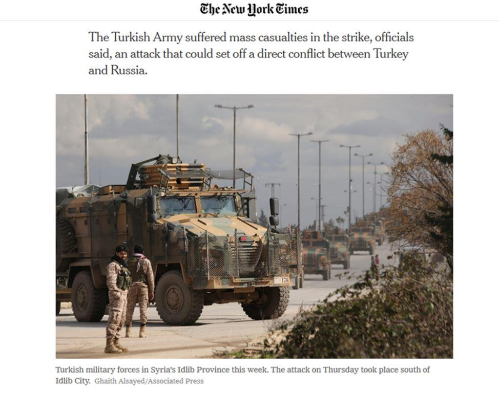Le président turc Recep Tayyip Erdogan a convoqué une réunion d’urgence jeudi (27 février) soir à Ankara, ont rapporté les médias turcs. Et les forces turques ont commencé à riposter jeudi contre les forces syriennes dans le nord-est de la province d’Idlib.
Erdogan a appelé le gouvernement syrien et les forces russes à cesser leur offensive à Idlib et à se retirer des positions turques, qui ont été encerclées et coupées par les forces du gouvernement syrien. Il a également demandé la création d’une zone de sécurité contrôlée par la Turquie dans la région pour les civils déplacés.
Erdogan, aux abois, demande l’aide de l’OTAN
Le New York Times indique que la Turquie a demandé à l’OTAN d’imposer une zone d’exclusion aérienne « pour protéger » (comme l’OTAN l’a fait en Libye en 2011) les quelque trois millions de civils dans la province d’Idlib. Or, Washington et les membres de l’OTAN ont jusqu’à présent refusé de s’engager militairement dans le nord-ouest de la Syrie par réticence à affronter la Russie, ont déclaré des responsables occidentaux. Les États-Unis retiennent la livraison des missiles Patriot jusqu’à ce que la Turquie accepte de rendre son système de missiles russes S400 inopérant.
« L’attaque contre la Turquie est une attaque contre l’OTAN », a déclaré Omer Celik, le porte-parole du parti de M. Erdogan, sur la chaîne d’information turque CNN. « L’OTAN aurait dû être avec la Turquie, non pas à partir d’aujourd’hui mais d’avant ces événements. Nous attendons des actions concrètes sur la zone de sécurité et la zone d’exclusion aérienne. »
Il n’y a pas eu de commentaire immédiat de la Maison Blanche, mais le Président Trump a clairement indiqué qu’il souhaitait rester en dehors du conflit, et a précédemment ordonné aux troupes américaines de quitter la Syrie.
Mercredi 26 février, le secrétaire à la défense Mark T. Esper a déclaré aux membres de la commission des services armés de la Chambre des représentants que les États-Unis ne cherchaient pas à réaffirmer leur présence sur place. « Il n’y a pas eu de discussion sur le réengagement dans la guerre civile », a-t-il déclaré. « Nous pensons que la meilleure voie à suivre est celle du processus des Nations Unies qui est en cours »39.
Toutefois, plusieurs responsables américains ont pris une position opposée à celle de la Maison Blanche suite à l’attaque aérienne de jeudi (27 février).
« Les perspectives d’un affrontement militaire direct entre la Turquie et la Russie en Syrie sont très élevées et augmentent d’heure en heure », a déclaré le sénateur Marco Rubio, républicain de Floride (très proche du lobby pro-israélien40), dans un tweet. M. Erdogan, a-t-il dit, « est du bon côté ici. Poutine et Assad sont responsables de cette horrible catastrophe humanitaire ».
Kay Bailey Hutchison, l’ambassadrice américaine auprès de l’OTAN, a déclaré jeudi (27 février) aux journalistes à Washington que « tout est sur la table ».
« C’est un développement important », a déclaré Mme Hutchison, « et notre alliance est avec la Turquie, pas avec la Russie ». Elle a ajouté : « Nous voulons que la Turquie comprenne que c’est avec nous qu’elle est alliée »41.
Le piège se referme sur un Erdogan isolé
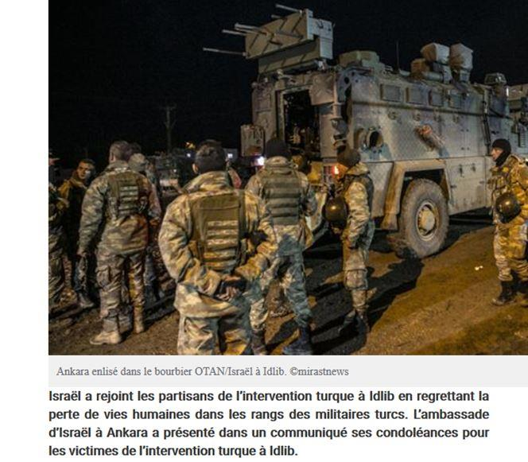L’ambassade d’Israël à Ankara a présenté dans un communiqué ses condoléances pour les soldats turcs tué à Idlib par les frappes syriennes
:
« Nous sommes très tristes de la mort des soldats turcs. Nous présentons nos condoléances à leurs familles et nous souhaitons un prompt rétablissement aux blessés. 42»
Le 26 février, le parti politique turc Vatan (Parti patriotique), a déclaré que si la Turquie lance une guerre contre la Syrie, elle peut tomber dans un piège tendu par Israël et les États-Unis, et ainsi perdre des alliés comme la Russie, la Chine, l’Iran et l’Irak.Le média russe Sputnik a obtenu une copie du rapport du parti turc Vatan :
« Les tensions turco-syriennes suscitent des inquiétudes. Nous avertissons que la Turquie est poussée dans un piège. Avec la Turquie, notre Président est également entraîné dans ce piège», a annoncé le Comité exécutif central du parti après une conférence de presse qui a eu lieu le 26 février dans la province d’Istanbul, ajoutant que « ce piège a été fabriqué par les administrations américaine et israélienne. »
D’après le parti Vatan, non seulement la Turquie fait face à de «graves menaces», mais ses voisins aussi, notamment la Syrie, l’Irak, l’Iran et la Russie. Selon les auteurs de la déclaration, le lancement d’une guerre contre un pays voisin comme la Syrie serait « un pas vers le piège ». Si cela arrive, le gouvernement d’Erdogan serait privé de soutien dans sa politique intérieure et extérieure, a affirmé le parti.43
Le Parti patriotique de Turquie a également lancé un appel pour collaborer avec la Russie et l’Iran afin d’apaiser les tensions à Idlib.44
Par ailleurs, 543 personnalités politiques, médiatiques, juridiques et des académiciens en Turquie poursuivent leurs appels au président turc, Recep Tayyip Erdogan, à arrêter son agression contre les territoires syriens et d’en retirer immédiatement ses forces.45
Quant à l’Iran et au Hezbollah, ils ont mis en garde le président turc et ses forces en présence en Syrie ; ils ont appelé à agir de manière rationnelle dans l’intérêt des peuples syrien et turc. Le Centre consultatif iranien en Syrie, qui participe aux combats dans le nord de la Syrie, a diffusé via l’agence de presse U-News un communiqué en réaction à la récente confrontation entre l’armée syrienne et l’armée turque. Il est à noter que le Centre consultatif iranien est composé du groupe d’experts iraniens qui conseillent l’État syrien et ses forces armées, et que c’est la première déclaration qu’il publie depuis le début de la guerre en Syrie. Le message envoyé à l’armée turque est clair : « Toutes vos forces sont dans notre ligne de mire ».46
Les évènements actuels, et le constat fait par le parti turc Vatan, viennent malheureusement confirmer les craintes formulées et les prévisions faites dans nos analyses prospectivistes publiées depuis plus de quatre ans concernant la politique suicidaire d’Erdogan47.
Aujourd’hui, Erdogan fait face à son destin.
Y.H.
NOTES ET RÉFÉRENCES
1. Oded Yinon’s « A strategy for Israel in the Nineteen Eighties », Published by the Association of Arab-American University, Graduates, Inc., Belmont, MA, 1982. Traduction en français à partir de l’anglais « Le Plan sioniste pour le Moyen-Orient », Sigest, 2015. Sur l’application et la mise en perspective géopolitique du plan Oded Yinon, voir : Youssef Hindi, Occident et Islam – Tome I : Sources et genèse messianiques du sionisme, Sigest, 2015.
2. « Libye : la Turquie offre un sous-marin et cinq navires pour l’embargo » , Romandie News, 23 mars 2011.
3. Algérie Patriote, « Syrie-Turquie : manifestation à Istanbul contre la guerre », 04/10/2012.
4. Sputnik News, « Erdogan s’excuse : un geste qui insuffle l’espoir dans les relations avec la Russie », 28/06/2016.
9. Le processus d’Astana (rebaptisée Nour-Soultan) a abouti à une baisse des tensions en Syrie, mais n’a pas permis d’arriver à une solution politique. Conformément à un accord obtenu en 2017 par la Russie, l’Iran et la Turquie, quatre zones de désescalade ont été mises en place en Syrie. Le territoire de trois d’entre elles est passé en 2018 sous le contrôle de Damas. La quatrième zone qui couvre le gouvernorat d’Idlib et partiellement les gouvernorats voisins de Lattaquié, de Hama et d’Alep reste toujours insoumise à Damas. Une grande partie est occupée par les terroristes du Front al-Nosra. En septembre 2018, Moscou et Ankara se sont mis d’accord pour établir une zone démilitarisée à Idlib qui abrite plus d’une dizaine de formations armées. Le dernier round des négociations entre la Russie, l’Iran et la Turquie à Astana a eu lieu les 10 et 11 décembre 2019.
Partager cette page